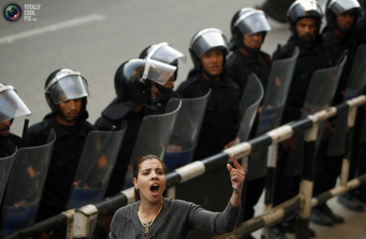

پذيرش > تریبون > مقالات > نتیجه اولین همه پرسی مصر: شکستی برای ائتلاف زنان


 نتیجه اولین همه پرسی مصر: شکستی برای ائتلاف زنان نتیجه اولین همه پرسی مصر: شکستی برای ائتلاف زنان
8 فروردین 1390 - شعله ایرانی—ترجمه شهرزاد امین - نسخه قابل چاپ
تغییر برای برابری : هفتاد و هفت درصد از مرم مصر در انتخاباتی که اکثریت آنان را به همه پرسی در روز 19 مارس کشاند، به تغییرات قانون اساسی رای مثبت دادند. تغییر 9 اصل در قانون اساسی کشور که شنبه ی هفته ی پیش، از طرف کمیته "مردان عاقل" یا کمیته ی ریش سفیدانی که متشکل از دولتمردان و ارتشی هاست پیشنهاد شده بود، پذیرفته شد. ائتلاف زنان برای بررسی قدمهای بعدی پس از این شکست روز یکشنبه دور هم جمع خواهند شد.
اصلاح قانون اساسی به جای طرح یک قانون اساسی جدید برای ائتلاف زنان که از تشلکلهای مختلفی تشکیل شده است، نا کافی تلقی شد. آنان به همراه ائتلاف جوانان، لیبرالها و چپها به اصلاحات ناقص و ناکامل، نه گفتند. حزب دمکراتیک ملی متعلق به رییس جمهور برکنار شده مبارک وحزب اخوان المسلمین جبهه آری به اصلاحات را تشکیل می دادند. شورای عالی ارتش نتیجه انتخابات را پذیرفته و برگزاری انتخابات مجلس را در ماه سپتامبر اعلام کرده است. انتخابات ریاست جمهوری پس از آن برگزار خواهد شد. تصمیمی که اخوان المسلمین و هواداران مبارک از آن استقبال کرده اند. بنا به گزارش الاهرام آن لاین قرار است حزب دمکراتیک ملی مبارک کنگره ویژه ای را در ماه آوریل تشکیل دهد تا رهبران جدیدی را برگزیند و به فعالیت سیاسی اش ادامه دهد. دینا سامک، مقاله نویس الاهرام آن لاین مینویسد که اعضای این حزب نقش عمده ای در بسیج جبهه ی آری به اصلاح مفاد محدود در قانون اساسی داشته اند. تصمیم برگزاری انتخابات مجلس در سپتامبر آینده، با نارضایتی نیروهای سیاسی جدید در جامعه روبرو شده است. آنان معتقدند که شش ماه مدت زمان کوتاهی برای سازماندهی مبارزات انتخاباتی و معرفی کاندیداهای تشکلها و احزاب جدید در جامعه است. در حالیکه احزاب شناخته شده ایی مثل اخوان المسلمین از هم اکنون در پی معرفی کاندیداهای خود هستند. اخوان المسلمین که چهره معتدل تری از خود در بازی و رعایت قواعد دمکراسی نشان داده و تعاریف معتدلی از قوانین اسلامی ارایه می دهد، در عمل با گروههای مرتجعی مانند سلفیها و جماعت الاسلامیه معتلف شده است. نکته ای که این گروهها را علیرغم اختلافاتشان متحد می کند ماده 2 قانون اساسی تنظیم شده در زمان سادات است. طبق این قانون، اسلام مذهب رسمی کشور است. و این به این مفهوم است که تمامی قوانین کشوری از جمله حقوق زنان و غیر مسلمانان بایستی با قوانین شریعت تطبیق داده شوند. معنای این ماده در قانون اساسی این است که زنان و مسیحیان حق رییس جمهور شدن را ندارند. حق ارث نابرابر و چند همسری برای مردان نیز از عواقب این ماده است.
سلفیها که رژیم های پارلمنتاریستی را غیر اسلامی میدانند در صدد بحث و گقتگو و استفاده از امکانات دمکراتیک برای رسیدن به اهداف خود یعنی برقراری دولتی دین سالارانه، هستند. یکی از دلایل رای مثبت این احزاب به اصلاح قوانین این بود که این اصلاحات هیچگونه تغییری در ماده 2 و یا هر قانونی که شامل حقوق برابر شهروندان جامعه است، بوجود نمی آورد.
غده تنتاوی، آکتویست زن چپگرا به نشریه ی پرسپکتیو فمینیستی می گوید "اگر چه پیشنهادات تغییر قوانین هیچگونه ارتباط مستقیمی با حقوق زنان نداشت، نتیجه انتخابات نشان داد که نیروهایی که مخالف حقوق برابر زنان هستند، قوی هستند". غده معتقد است که تاثیر فمینیستها بر روی انبوه مردم در خیابانها بسیارکم است در حالیکه مسلمانان واپسگرا در بین مردم فعال هستند. او می گوید که " سلفیها در بین محلات فقیر نشین تبلیغ کردند که رای نه به انتخابات به این مفهوم است که دختران جوان آزاد خواهند بود تا هر کاری دلشان بخواهد بکنند منظور البته آزادی جنسی خارج از کنترل بود".
روشنفکران و فعالین مصری معتقدند که مصر جامعه پیچیده ای است و تفاوتها در آن بسیارند. "همزمان بایستی یاد آور شویم که هزاران زن مصری شبانه روزدر بحبوحه ی انقلاب در میدان تحریر خوابیدند، چیزی که در جامعه مصر بسیار غیر معمول است. این زنان به عنوان قهرمانان از جانب مردم مورد ستایش قرار گرفتند"، غده که خود نیز در بین انقلابیون بود بر روی این نکته تاکید می کند.
بحث و گفتگو در مورد خواسته های انقلابی برای تحولات پایه ای و پیشرفتهای خزنده ضد انقلابیون در خیابا نها و شبکه های اجتماعی ادامه دارد. جامعه مدنی مبارزه خود را برای رسیدن به آزادی و دمکراسی ادامه می دهد. روزنامه نگاران در رسانه های مختلف معترضند و خواهان کناره گیری رهبران سابق هستند. دانشجویان نیز بر این خواسته پافشاری می کنند. اتحادیه های کارگری جدید تشکیل می شوند و اعتصابات برای کسب شرایط کاری بهتر در جریان است. مسیحیان و اقلیتهای مذهبی که نقش فعالی در انقلاب مصر داشتند برای احقا ق حقوق برابر شهروندیشان و علیه خشونت مسلمانان مرتجع مبارزه می کنند.
روز 23 مارس دولت جدید مصر قانونی را تصویب کرد که هرگونه اعتصابی که از طرف افراد و وزارتخانه های دولتی مخل نظم و کسب و کار تلقی شود جرم و مستوجب مجازات محسوب میشود. دانشجویان دانشگاه قاهره که چند هفته است برای برکناری رییس دانشگاه دست به تحصن زده اند اولین کسانی بودند که روز بعد از تصویب این قانون بازداشت شدند.
اعتراضات علیه ممنوعیت تظاهرات و اعتصابها از هم اکنون شروع شده است و علیرغم اعلام این قانون که از قوانین دوره ی شرایط اضطراری مبارک است تحصن ها و تظاهرات ها در دانشگاه ها و مراکز کار و به ویژه در رسانه ها برای تضمین آزادی بیان ادامه دارد..
به نقل از نشریه ی سوئدی پرسپکتیو فمینیستی نوشته ی شعله ایرانی. ترجمه شهرزاد امین
ارسال به
بالاترین
،
توییتر
،
فریندفید
،
فیسبوک
در همين بخش :
 دهمین دورۀ مراسم تندیس صدیقه دولت آبادی ۱۳۹۲ دهمین دورۀ مراسم تندیس صدیقه دولت آبادی ۱۳۹۲
کارت پستالهایی به بهانهی هشت مارس و به یاد همهی مبارزین راه برابری
بیانیه بیش از 350 تن از مدافعان حقوق زنان به مناسبت روز جهانی زن؛ زنان هر روز فرودستتر میشوند
لباسی که برای تن ما دوخته اند! /اعظم بهرامی
چالشها و چشمانداز فعالیت مدنی زنان
ديگر بخش ها :
طرح یک میلیون امضا
|
مقالات
|
سایت نوشته ها
|
اخبار
|
گزارش كمپين
|
گفت و گو
|
علیه سکوت
|
كوچه به كوچه
|
نامه های شما
|
گزارش ویژه
|
گفتگو با اعضا
|
ویژه سالگرد کمپین
|
تصویر برابری
|
دل آرام علی
|
تریبون
|
مقالات
|
تاریخ شفاهی
|
خارج از چارچوب
|
کتابخانه
|
درباره کمپین
|
کمپین در شهرها
|
کمپین در بند
|
صدای تغییر
|
ویژه 22 خرداد
|
لایحه حمایت از خانواده
|
گالری
|
عشا مومنی
|
امیر یعقوبعلی
|
خدیجه مقدم
|
راحله عسگری زاده و نسیم خسروی
|
پروین اردلان،جلوه جواهری، مریم حسین خواه، ناهید کشاورز
|
زینب پیغمبرزاده
|
سعیده امین، سارا ایمانیان، محبوبه حسین زاده، ناهید کشاورز و همایون نامی
|
احترام شادفر
|
نسیم سرابندی زاده،فاطمه دهدشتی
|
وبلاگ مهمان
|
پرونده خرم آباد
|
دستگیری ها
|
مریم مالک
|
پرستو اللهیاری
|
مهرنوش اعتمادی
|
سمیه رشیدی
|
Other Languages
|
همراهان
|
«فراخوان کمپین ده روز با بهاره هدایت»
| English
|